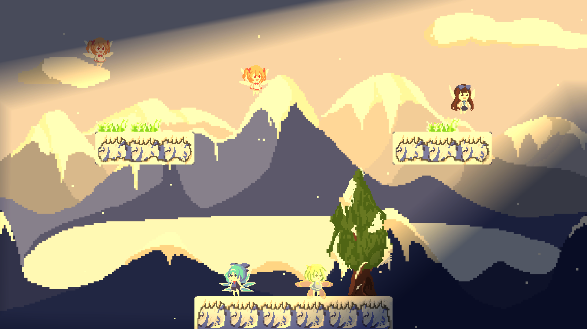
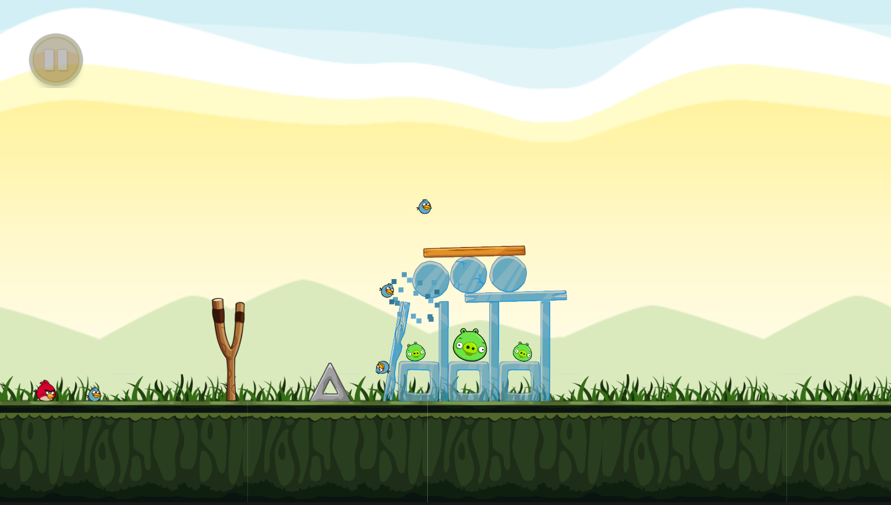
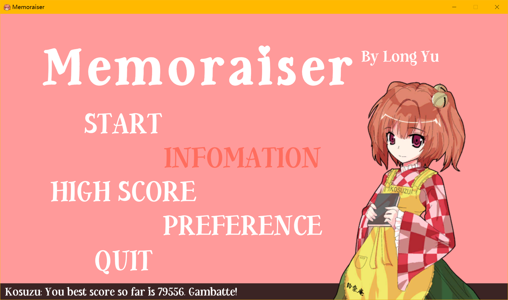
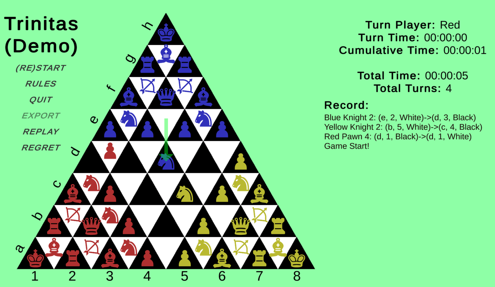

WIP, split these to different pages please
Touhou Blooming Chaos 2
Touhou Blooming Chaos 2 is a fun-filled, innovative 2D rogue-like game that combines RPG and FTG elements. In this game, you can control more than a dozen beloved characters to navigate through numerous randomized labyrinth, meet special room and friends on the way, defeat boss and collect items, palette, music and equipment.
TBC2 is made in Unity3D. I took over this large project in my first full-time internship and developed it from its EA stage to full official release. It was a brilliant success in China indie game studios - up to now we have sold 50k+ copies and is still rated “Overwhelmingly Positive” on Steam. Here is my memorial of those memorable months of development.
The characters and the the map were from Touhou Project created by Zun. This is a Doujin Commerical game. Want to know more about Touhou Project and our Doujin community? You can start here.
You are welcome to purchase our game on Steam! Currently, it supports English, Chinese and Japanese.
Touhou Blooming Chaos 2 DLCs
Besides developing the base game, I also independently developed 5 character extension packs containing 20+ characters. Each character may have 5 to 16 skills. Unlock more playable characters to add more fun to your gaming!
Hey, if you must pick one, I will recommend DLC2. It has the character Aki Minoriko who possess my most special skill design - and she is strong!
Front-End Projects
CalCourse (In Progress)
Calcourse is a Web Application that a project that generates four-year course plans for us Berkeley students. Every year, new students come in and asking what courses are recommended on discord and reddit. Students taking two or three majors/minors always find it complicated to plan out their courses over the four years. We want to offer this one-stop solution for them.
I am basically in charge of all major front-end development. I implemented a animated, responsive design, with an interactive schedule where students can customize the schedule generated by algorithm by just drag-and-drop.

We are still in the progress of development.
Decode Official Website
Decode Conference is a collaboration between Berkeley and Stanford. I was honored to be able to have the opportunity to develop the official website for Decode.
The website serves for a promotion tool for ticket selling before the conference.

And the website serves as a schedule during the two-day meeting that hosted 2000+ people globally online and in-person.
Personal Website

This website is the website I am talking about. I put a picture here to capture its original home page appearance - so that I could still remember how this site started after several years of tinkering and changes. I think the design is good, but I am open to any aesthetic criticism.
One thing I think is worth mentioning is that when I decided to build this website I had zero front-end experience - and I learnt and built it up in like, 3 days? I could not remember the exact - but I am proud of this achievement. Of course, I owe I huge thank-you to many great front-end developers that helped me and answered my questions.
If you want to know more about the this website, check About This Site page.
Game Projects
Touhou Fairy Wars 2 ~ Inconsistent Memories
A fun game that needs both brains and brawn. It features 14 carefully designed levels, and supports single player and local multi-player game-play. Stomp on each other heads and have fun!
This game is actually a demo I made for my planned larger game project in December. It has the most core functionalities and if you have time, please try it out and just shoot me any feedback. You can download the game at itch.io for free.
Angry Bird Replica
An desktop replica of the famous mobile game. I made it open-source.
Made it over two days. It now supports core gameplay, level select and data save. Will be updating this over the long term whenever I have time. For more information and to follow up on the latest updates, please check the GitHub Repository.
Memoraiser
Memoraiser is a memory training game that follows a simple play flow and UI (Hum, the fact is I could not afford an artist). To ease the boredom of training, the game features two characters from Touhou Project and interject with funny dialogues.
You can download the game here if it is for personal use only. If you want to use this game for pedagogic/education purpose on a larger scale, please contact me through email (you will find it in this site). Any commercial use is prohibited.
Trinitas
Trinitas is a three-player chess. The original idea and rules are from my friend, high-school roommate, brilliant mathematician Zhichen Zhou who is now in Cambridge University. As requested, I implemented this project. In the demo version, Trinitas supports playing, importing, exporting game record, auto-judging and regretting.
You can download the game here if it is for personal use only. Any commercial use is prohibited.
Technical Publications
This may sound fake or even hypocritical - but I really do have a dream to utilize the great power of computer science and data to improve humanity’s wellbeing. Our bodies are just so fragile and weak. They refuse to survive traffic accidents, deteriorate after 12-hour continuous work, crash for long-term unhealthy diets. It took me only one year to develop myopia, yet two years to reach a diagnostic confirmation on IBS, and perhaps forever to accept that one of my beloved families’ life is permanently disrupted by breast cancer. We should aid and care our weakest mortal corpses with the strongest power: computer science.
Visual Correction Display (In Progress)
In this research, we worked on improving the hardware and software aspects of Professor Barsky’s approach of producing a corrective visual display for those with visual aberrations (myopia, hyperopia and so on). In contrast to asking the patients to wear corrective lens, our algorithm “distorts” the image and texts rendered on electronic screens so that people with conditions can see it sharply.
This research just started. As an freshman undergraduate I was very fortunate to be selected into this team that is made up of master students. I hope to learn a lot from them and from the professor.
Auditory Attention Detection
In this research, we have quantified a major drawback of the effectiveness of the currently existing auditory attention decoding algorithms using a data science approach in MATLAB. This research is done in Institute of Infocomm Research, affliated to Agency of
Auditory attention decoding has important application in cochlear implants. People who must rely on cochlear implants have difficulties differentiate one voices from another in an environment of competing speakers, as the implants cannot do what normal humans can do with ease - pick up and only attend to one voice. Our investigated approach seeks to decode which voice the subjects are trying to attend to by collecting and analyzing their Electroencephalogram data (it is a kind of brainwave that can be collected non-intrusively). If that is successful, we can build in this functionality into cochlear implants to facilitate better assistive effects.
Here is the abstract of our paper.
Abstract: Rationale. Brain signals measured using Electroencephalogram (EEG) vary with the speech being attended to. This paper investigates the feasibility of using EEG-based Brain-Computer Interface (BCI) to detect attended speech. Approach. EEG data recorded from subjects listening to two different sets of speeches were collected: “ideal” speeches involved different-gender fiction narration without background noises and shifts in volume, speed and tonality, and “realistic” speeches from lecture recordings with background noise and occasional music. The EEG data collected were then pre-processed by temporal filtering into low frequency bands (2-15 Hz) and spatial filtering with Common Average Reference. The speech data presented to the subjects were also pre-processed by extracting Hilbert envelope from each sub-band. These data were divided into 30s trials and used to train intra-subject classifiers to detect the attended speech using EEG data. Results. Leave-one-out cross-validation on intra-subject accuracy yielded an average of about 65% for “ideal” speeches and about 50% for “realistic” speeches. The results from ideal speeches showed promise that EEG-based BCI can be used to detect attended speech, which provided a starting point for research in other auditory representation methods and also future potential applications in cochlear implants development. However, the lackluster results from realistic speeches showed that more research in developing robust methods to detect attended speech is required. (Original title: Auditory Attention Detection in More Realistic “Cocktail Party” Scenarios Using Electroencephalogram Signals)
Non-technical Publications
Searching for a Colorful Railway in Prague
A book I published for my 17th birthday. A fun, intriguing, little novel.
I do want to talk a bit more about this book in a separate post. I will update this link to that post here once I feel like writing.
Summary: It is a question that has thousands of answers. It is a question that has no answer. It is a question of meaningfulness. It is a question of meaninglessness. It is a question that some take the whole life to think about. It is a question that some never think of throughout the whole life. A Chinese best selling author living in Prague today had a strange visitor in his room: the Archbishop of Canterbury of England. Receiving the request from latter, he began his journey to search for a “colorful railway” that he visited only once with his sister. More and more lies were revealed. More and more clues and lines were connected in. More and more people were involved. Kafka. Dvorak. Mozart. Beatles. Life. History. Philosophy. Politics. Arts. All appeared to be connected but all appeared not. All seemed to have meaning but all seemed not. He felt, that he was merely dancing to the music. During this ridiculous request of cluelessness, he finally realized the biggest secret in Eastern Europe and the meaning of meaning… Author Long Yu deftly explores multiple themes including the notion of truth, interconnectivity, relationship and so forth. Eventually, he gives a unique ending-and a unique answer to the questioning of the meaning of being.
You are welcome to support me by purchasing the book at Amazon. Take note that it is in Chinese. When will I publish another one? Probably my 35th year into life.
GitHub Discussions